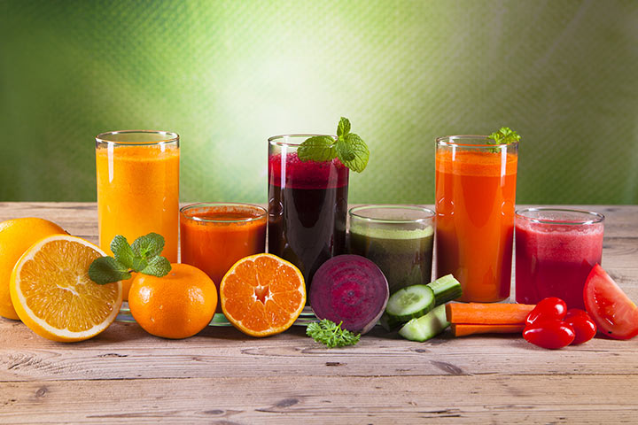
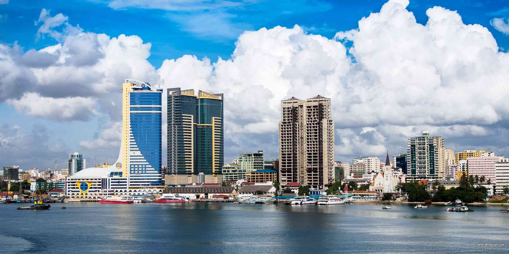

Welcome to Bountiful Foods , Dar es salaam
Make your own fruit drink
Summary Information About Tanzania
Tanzania is a country between the great lakes of East Africa and the Indian Ocean. The land has a total area of 947,300 km² (365,754 mi²) and a total coastline of 1,424 km (884.8 mi). This land area is approximately 136% of the area of Texas. The current population of the United Republic of Tanzania is 63,900,257 as of Thursday, December 15, 2022, based on Worldometer elaboration of the latest United Nations data.
Current Weather
°C
current wind speed is 00
Humidity is 00%
General Information
Bountiful Foods is small business specializing in organic, locally grown foods. They are physically located in Kinondoni, Dar es salaam, however, they have many food trucks that cover the coastal area from Morogoro to Mbeya. The company sells fruits and produce directly from the farmers in the area, but also uses some national and international suppliers. The owner-operated company caters to walk in traffic at their storefront in Kinondoni and, of course, their food trucks.